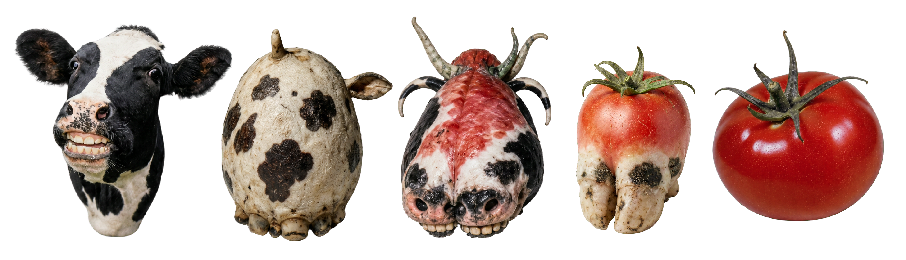

Wing dryer
Insect accessory
A wing dryer is an object used for drying the wings of large insects. The body is rounded and compact, with a raised upper section. The insect is placed on the surface while the wings dry.
Size
12 cm × 8 cm
Weight
180 g